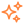

{{ conversation.groupName || (conversation.users[0].firstname + ' ' + conversation.users[0].lastname) }}
{{'SENDER.MODALS.CONV_DETAILS.about' | translate}}
{{ conversation.users[0].about }}
{{ conversation.users[0].about }}
{{'SENDER.MODALS.CONV_DETAILS.common_groups' | translate}}
{{ groupConv.groupName }}
{{'SENDER.MODALS.CONV_DETAILS.text_you' | translate}}, {{'SENDER.MODALS.CONV_DETAILS.text_and' | translate}} {{ user.firstname }}
{{'SENDER.MODALS.CONV_DETAILS.list_members' | translate}}
{{ user.firstname }} {{ user.lastname }}
{{'SENDER.MODALS.CONV_DETAILS.action_clear' | translate}}

{{'SENDER.MODALS.CONV_DETAILS.action_archice' | translate}}